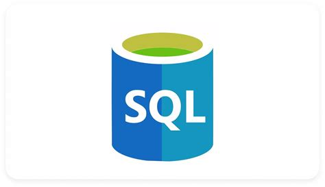
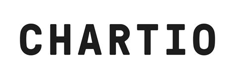

Période : Avril à Juin 2024
Stage de trois mois dans le cadre de la seconde année de DUT STID
Intuiface est une entreprise française spécialisée dans le développement de solutions logicielles interactives sans code,
destinées à créer des expériences numériques engageantes. Fondée en 2004 sous le nom d'Intuilab,
la société a évolué d'un modèle de services numériques axé sur les interfaces homme-machine vers un éditeur de logiciels à portée internationale.
Accès à Intuiface
Missions : Migration de tableaux de bords de la plateforme chartIO vers AmazonQuickSight
Migration de tableaux de bords à caractère statistique et financier
Documentation sur AmazonQuicksight
Extraction des données (SQL)
Reproduction des charts sur Quicksight
Documentation pour l'entreprise sur le fonctionnement de Quicksight
Langages et Outils utilisés
 Compétences développées :